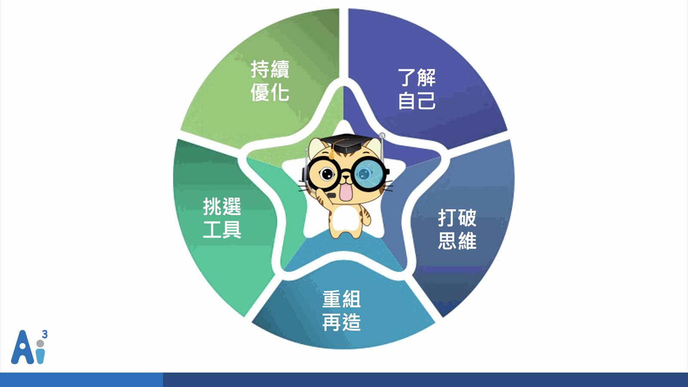
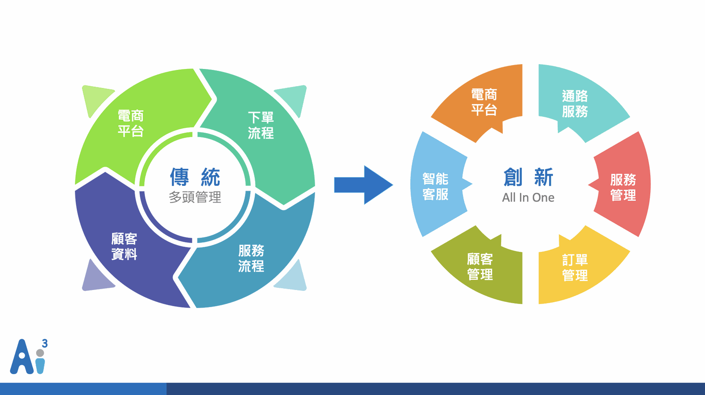

因應科技變革以及使用者習慣的改變，為了不被市場淘汰，許多傳統企業被迫「數位轉型」，那什麼是數位轉型呢？要怎麼做？接下來，我們以傳統物流業的服務及銷售型態為例，逐步轉型步驟以及成功案例：
什麼是數位轉型？
數位轉型簡述為應用創新科技將大量人力執行的流程做優化或是取代，如：銷售流程、服務流程及營運流程等，成為一個具有靈敏性和機動性，以顧客價值與服務體驗為核心的經營模式。
怎麼做數位轉型？

要做任何事情之前，無論是執行身份和內容，須先了解自己再去做執行及後續優化，透過不斷的優化，產出自己可接受的思維和執行方式，並且又可提升自身價值。
第一步驟：了解自己
企業內、外部有許多大大小小的流程，像是行銷手法、銷售模式、服務模式、營運模式、管理模式等不同的模式，需要盤點並且了解企業的標準化流程有哪些，是否有執行的必要性，去做第一步的流程整理。
第二步驟：打破傳統思維
傳統企業文化思維都是以「公司、企業」角度出發，但如是因應消費者行為去做數位轉型的改變，須以「顧客」角度出發。
公司文化和執行方針會因應思維角度改變做調整，一般企業文化思維調整是由「上」而「下」的執行，從老闆到主管最後至基層人員做思維、管理、執行的觀念調整。
第三步驟：重組能力
前述流程盤點以及公司內部執行管理思維調整後，就可以開始執行打掉重練的方案，如何將標準化流程應用創新科技、人工智能技術做流程數位化以及企業對外服務型態的數位轉型。
第四步驟：使用工具
市場上很多協助數位轉型的工具，像是線上服務、文字客服、智能機器人、工業自動化、智慧化流程管理…等，那要怎麼挑選出一個符合自身需求又好用的系統呢？需要因應各個產業性質的不同去評估，但就工具「使用者」角度而言，會希望這些工具是在同一個平台上操作，節省掉操作方式學習和重工的人力消耗，達到工作效率最大化。
第五步驟：持續優化
流程數位化後會留下大量的資料及數據需要做整理分析，從中取得流程優化及企業政策推廣的參考值。
物流業成功轉型案例─如何應用對話商務？
狀況說明
物流業傳統銷售方式是由臨櫃、電話方式接近訂單後，人力安排貨運進行派車收貨、集貨點理貨、派車送貨等程序，這中間皆需耗費大量人力，且於三節送禮、購物旺季期間，物流貨運的訂單量為最多，人力資源無法負荷的時候，只能有多少單做多少。
若持續這樣的方式，雖說企業可以永續經營，但最終可能會面臨到因應無法承接的單量太多，導致顧客不滿而口碑不好，且後續電商購物盛行，訂單量因應新型態消費方式而物流需求量又提升。於是，某傳統物流公司開始思考流程自動化的方式，將部份人力資源由機器自動化替代，將人力轉至必須有且具專業度的部門上。
轉型規劃
由於此間物流商已營運許久，相關作業流程皆有做標準化及內部管理自動化的部份，故盤點各單位人力資源消耗情況，結合市面上可提供的技術資源，再次進行企業轉型優化程序，且依「顧客」角度出發，去發想如何優化或是制定新型服務內容，去迎合市場。
傳統物流業銷售方式，是以「臨櫃、電話」的方式接件，這部份需要大量的重複性人力提供服務，且於近幾年的科技發展出了對話商務及人工智慧科技的議題，新世代的消費者改變了消費習性，例如線上購物、社群團購等，但還是有某些量的消費者還是維持原有消費行為，例如店面採購、電話叫貨等。
因應目前消費者行為可以提供3種配送下單方式：
1.線上下單 > 2.電話下單 > 3.來店寄貨
轉型工具
對話商務議題應用的技術剛好可提供物流業第一點線上下單的一整套自動化流程，僅需部份人力資源進行輔助。第二點和第三點為原有的銷售行為，僅有將接件後，需要使用人力溝通流程，與第一點的自動化流程合併，進行流程優化。

如上述第四步驟使用工具，會希望可使用自動化、管理流程優化以及統一平台進行有效的流程管理和減少人為維護時間的一套創新應用科技，人工智能公司的對話商務目前結合了All in One商務自動化系統，以「顧客關係管理」基底出發：「客戶關係管理系統(CRM)」、「聊天機器人(ChatBot)」、「全通路客戶服務系統」、「訂單管理系統」、「服務後送管理系統」。
成效評估
新型態系統需經營一段時日後評估效益是最為準確的，可依此數據進行評估「電話服務逐步移轉至自助服務和文字服務的轉換率」。
降低電話客服進線下單需求的評估點「將電話服務型態為１對１服務人力，轉換成文字服務型態為１對多服務人力」或「智能機器人自動化下單，轉換電話服務人力」。
線上自動下單數量提升
智能機器人可取代人力進行接單，自動化訂單且不因人為疏失而漏單，用來提升銷售額度。
潛在顧客數提升
線上服務通路帶入淺在顧客的下單數量。
顧客滿意度提升
提供多樣化全通路的服務方式，提升顧客滿意度，打響企業品牌形象。
觀看更多文章